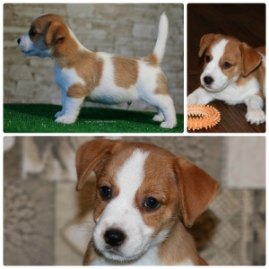

1 день
1 день
Девочки - 1 месяц 12 дней
Девочки
- 1 месяц 12 дней
Девочки - 1 месяц 12 дней
Девочки
- 1 месяц 12 дней

Мальчик 1 - Clever Caper Francesco Heavenly-Blessing
(НАШЕЛ СВОИХ ХОЗЯЕВ, Конюшенко А., г. Киев)
Мальчик 1 - Clever Caper Francesco
Heavenly-Blessing (НАШЕЛ СВОИХ ХОЗЯЕВ, Конюшенко А., г. Киев)
Мальчик 2 - Captain Jack Heavenly-Blessing (НАШЕЛ СВОИХ
ХОЗЯЕВ, г. Киев, Ющенко А.)
Мальчик 2 - Captain Jack Heavenly-Blessing (НАШЕЛ СВОИХ
ХОЗЯЕВ, г. Киев, Ющенко А.)
Девочка 1 - Christi Crazy Love Heavenly-Blessing (НАШЛА
СВОИХ ХОЗЯЕВ, Воротнюк И.Б., г. Киев)
Девочка 1 - Christi Crazy Love
Heavenly-Blessing (НАШЛА СВОИХ ХОЗЯЕВ, Воротнюк И.Б., г. Киев)
Девочка 2 - Caroline Catch The Wind Heavenly-Blessing
(НАШЛА СВОИХ ХОЗЯЕВ, Антонюк В., г. Киев)
Девочка 2 - Caroline Catch The Wind
Heavenly-Blessing (НАШЛА СВОИХ ХОЗЯЕВ, Антонюк В., г. Киев)
Девочка 3 - Candy Cover Girl Heavenly-Blessing (ОСТАЕТСЯ
В ПИТОМНИКЕ)
Девочка 3 - Candy Cover Girl Heavenly-Blessing (ОСТАЕТСЯ В
ПИТОМНИКЕ)
Девочка 4 - Camellia Charming Lady Heavenly-Blessing
(НАШЛА СВОИХ ХОЗЯЕВ, Морозова Ольга., г. Киев)
Девочка 4 - Camellia Charming Lady
Heavenly-Blessing (НАШЛА СВОИХ ХОЗЯЕВ, Морозова Ольга., г. Киев)
Щенкам 1 месяц 12 дней
Щенкам 1
месяц 12 дней
ЩЕНКИ ДЖЕК РАССЕЛ ТЕРЬЕРА
ПОМЕТ
"C" (англ.)
11 мая
2017 г. родились бело-рыжие щенки джек рассел терьера от пары прекрасных производителей LOVELY-ORANGE RED HOT CHILLY PEPPER и ZHASMIN HEAVENLY BLESSING - 2
мальчика и 4
девочки!
ФОТОАЛЬБОМ ЩЕНКОВ
Caroline Catch The Wind
Heavenly-Blessing
Девочка 1
(продана) - Christi Crazy Love Heavenly-Blessing
VIDEO
Девочка 2
(продана) - Caroline Catch The Wind Heavenly-Blessing
VIDEO
Девочка 3
(остается в питомнике) - Candy Cover Girl Heavenly-Blessing
VIDEO
Девочка 4
(продана) - Camellia Charming Lady Heavenly-Blessing
VIDEO
VIDEO
VIDEO
Родословная щенков построена на лучших кровях мира. В
родословной щенков ЧЕМПИОНЫ МИРА И ЕВРОПЫ, десятки Мульти и Интер Чемпионов,
Лучшие производители и Лучшие представители породы:
JACKANDFISH AND GEK
RAZ - Юный Чемпион Европы-2015 (BOB), резервный Лучший кобель на
Чемпионате Мира-2016 (rWW16), Интер
чемпион, чемпион множества
стран.
LOVELY-ORANGE X-CHECK AND
MATE - Лучшая сука на Чемпионате Мира-2016 (World Winner-2016), Мульти и Интер
чемпион, Вице Юный Чемпион Мира 2013 (Венгрия), чемпион множества
стран.
Мультичемпион GOLDSAND'S COLUMBUS -
самый знаменитый и титулованный джек рассел терьер, который на конец 2013 г. занимал 7 строчку в
мировом рейтинге среди собак всех пород группы терьеров. Его достижения - 35 BEST IN SHOW, 5
specialty BIS, 38 RBIS, 140 group 1s (на конец 2014 г.)!!!
Мультичемпион LET'S ROCK AT THIS MOMENT - Лучший
джек рассел терьер 2008-2009 г.г. (Фмнляндия).
Мультичемпион, Интерчемпион HUOLETON CAPRICORNUS - Победитель Евразии 2012, Вице Чемпион Интерры
2012 (Венгрия), Чемпион множества стран.
Мультичемпионы, Интерчемпионы и многократные
победители выставок: KANIX SPEED
WAGON , KANIX 2 MUCH
GOSSIP , KNOTTELITEN'S
DIAMOND DEE , JAMES BOND Z HRADU
PIHLOV , LOVELY-ORANGE DE
BARBA NEGRA , DANDEE
DOMINIK , LANTAKA
POLEPOSITION , SIEGER'S BLA
BLA
BLA , SALTISGARDENS SNILLE O SMAK , YANITA TOTTENHAM COURT , FIRETTE'S ON THE ROCKS , VITSUDDENS
MUSSE
РОДИТЕЛИ ЩЕНКОВ
LOVELY-ORANGE RED HOT CHILLY PEPPER ZHASMIN HEAVENLY
BLESSING
Юный Чемпион
Украины
3xBEST PUPPY
3xJCAC
2xCAC
3xBOB
2xBOS
Выставочная карьера
продолжается...
Юный Чемпион Украины
(дважды)
Чемпион Украины
Кандидат в
Интерчемпионы
Призер группы (щенки) - 2
место
Призер выставки (юниоры) - 3
место
Призер группы (юниоры) - 1
место
Призер группы (юниоры) - 2 место
(дважды)
Призер выставки - 3
место
Призер группы - 1
место
Призер группы - 2 место
(дважды)
Призер группы - 5
место
ДАТА РОЖДЕНИЯ: 15.02.2016
ТИП ШЕРСТИ: Жесткошерстный
РОСТ: 29,5 см
Полнозубый
ДАТА РОЖДЕНИЯ: 17.09.2013
ТИП ШЕРСТИ: Гладкошерстный
РОСТ: 27 см
Полнозубая
РОДОСЛОВНАЯ ЩЕНКОВ
JUNIOR CHAMPION OF UKRAINE
CHAMPION OF MOLDOVA
GRAND CHAMPION OF MOLDOVA
Candidate in B.B.B. - BEST OF THE BEST OF BREED
IN UKRAINE
3xBEST PUPPY
BIG-4
6xBOB
6xBOS
4xCACIB
3xJCAC
12xCAC
LOVELY-ORANGE RED HOT CHILLY PEPPER
White & Tan
JUNIOR ITALIAN CH, EUROPEAN JUNIOR WINNER 2015-BOB, ITALIAN CHAMPION, RUSSIAN
CHAMPION, NORWEGIAN CHAMPION, RSM CHAMPION, JUNIOR IT CLUB SHOW WINNER 2015, IT CLUB SHOW WINNER
2015, JUNIOR ITALIAN TOP DOG 2015, ITALIAN TOP DOG 2015, rWORLD WINNER 2016, ITALIAN TOP DOG 2016,
ITALIAN TOP TERRIER 2016, RSM TOPDOG 2016, INTERNATIONAL CHAMPION, INSUBRIA WINNER 2016, ROMA
WINNER 2016
JACKANDFISH AND GEK RAZ
JUNIOR ITALIAN CHAMPION, ITALIAN CHAMPION, REPRODUCER CHAMPION, vEUROPEAN
CHAMPION 2013, SWEDEN CHAMPION, RUSSIAN CHAMPION, RKF CHAMPION, EURASIA WINNER
2014
KANIX 2 MUCH GOSSIP
White & Tan Danish Kennel Club Winner 2008 Copenhagen Winner 2008 Nordic Winner 2008
Interra Winner 2008 Rostock Sieger 2008 Winner of Winners 2007 InternationalChampion Nordic
Champion Danish Champion NorwegianChampion Swedish Champion Polish Champion Gibraltar Champion
Club Champion Nordic Winner 2007 Danish Kennel Club Winner 2007 Copenhagen Winner 2007 Double
Danish Kennel Club Jubilee Winner 2007 Danish Terrier Club Jubilee Winner 2007 World Winner 2006
Nordic Winner 2006 Polish Winner 2006 Copenhagen Winner 2006 Club Winner 2006 Danish Kennel Club
Winner 2006 Norwegian Winner 2005 Swedish Winner 2005 Copenhagen Winner 2005 Danish Kennel club
Winner 2005 Club Winner 2005 Youth European Winner 2005 ( BOB & BOG)
KANIX SPEED WAGON
White & Tan
ABSOLUTE AIDA OF MAYO LAND
White & Tan
KNOTTELITEN'S NAUGHTY BUT NICE
White & Tan SV-10, DKV-10, AMSV-10
KANIX FAST TRACK
White & Tan
Nord.uch, NORDJV-09, NORDV-09, JVV-10, NV-10, DKV-10,
AMSV-10
KNOTTELITEN'S DIAMOND DEE
WOLRD WINNER-2016, VICE JUNIOR WORLD WINNER-2013, ex 3 INTERRA`13, JCH RUSSIA,
JCH CLUB, JCH LT, CH RUSSIA, CH SWEDEN, CH FINLAND, CH ITALIANO, CH CLUB, CH Czech, СР RKF, CH
EURASIA`14, Candidat of Slovenia Ch, Candidat of Poland Ch, Candidat of Chroatia Ch (3 cac),
Candidat of International CH, Artificial earth (fox)
LOVELY-ORANGE X-CHECK AND MATE
C.I.B. Junior world winner 2011,cz ch,jr cz, Grand Champ CZ, Champ CZ,
Champ-Jun CZ, BOB 3x, CACIB 3x, res.CACIB 2x, Club winner, Winner of KCHT CZ, Europa-Jgd-Sg.VDH,
Best Junior, CAC CMKU 3x, Anw.Dr.Jug.Ch.VDH, Jg-CACA ch.
JAMES BOND Z HRADU PIHLOV
White & Tan ChNL, ChB.
ERUS V.H. INSULA MARIS
White & Tan
Interra Winner, Champion
CZ, Champion SK, Champion Jgd.A, Champion KCHT, WDS 2008 W pupy, WDS 2010 Excell.1,
CAC.
HALIE Z HRADU PIHLOV
White & Tan
LOVELY-ORANGE EXOTIC BUTTERFLY
White & Tan JCH
RUS,JCH LT,JCH LAT,JCH EST CH RUS,CH RKF,CH LT, BALTIK WINNER 2010 JCAC* 9, CAC* 11, CACIB*
2
DANDEE DOMINIK
2009
Юный Чемпион России, Юный Чемпион НКП 2009, Терьер Союз
России 3 ЮСС, Юный Чемпион Литвы, Юный Чемпион Терьер Союза Литвы, Юный Чемпион Болгарии,
Юный Чемпион Черногории, Юный Чемпион Румынии, Юный Чемпион Македонии, Юный Чемпион
Балканских Стран, Гранд Чемпион России, Чемпион России, Чемпион Молдавии, Чемпион Литвы,
Чемпион Национального Клуба, Чемпион РКФ, Призер Интерра 2009 Словакия Best Baby 2, Best
Puppy 4, BJ 4, CW 19, JCAC 8, CACIB 4, RCACIB 5BOB 6, BIG 2-1, BIG 1-1, BIS-3
Международный рабочий сертификат по лисице.
LOVELY-ORANGE DE BARBA NEGRA
White & Tan
Юный Чемпион Украины (дважды), Чемпион Украины, 2xJCH UA, CH UA, BIGp-2,
BISj-3, BIGj-1, 2xBIGj-2, BIS-3, BIG-1, 2xBIG-2, BIG-5, 6xWJC, 2xjBOB, 4xjBOS, 3хBOB, 4хBOS,
CACIB, R.CACIB, 5хCAC
ZHASMIN HEAVENLY BLESSING
White & Tan Юный Чемпион России, Юный Чемпион Латвии, Юный Чемпион Эстонии, Юный Таллин
Виннер, Юный Чемпион Беларусии, Юный Чемпион Украины, Чемпион России, Чемпион РКФ, Победитель
Евразии 2012, Чемпион Латвии, Чемпион Литвы, Вице Чемпион Интерры 2012 (Венгрия), Чемпион Румынии,
Чемпион Болгарии, ИНТЕРЧЕМПИОН
HUOLETON
CAPRICORNUS C.I.B. NORDCH FICH NW-10
GOLDSAND'S COLUMBUS Such
Nuch Intuch VDH&Dech NV-06 SV-07
SALTISGARDENS SNILLE O SMAK
CH
SWE
BROSING'S AUSTRALIAN IVORY White & Tan
MULTI CH, BEST JRT IN FINLAND -2008-2009, BEST JRT BITCH IN FINLAND-2011, CH
FIN, CH DK, CH EE, V-2007, JV-2007, V-2008
LET'S
ROCK AT THIS MOMENT FIN,
EST & S MVA, JV-03, V-03-04-06, PMV-05, BALTV-06, AW-06, SV-06, MV-08, HeVW-12, VV-12,
NOVV-12
FIRETTE'S ON THE ROCKS
CH
FIN, CH EST JW-05, EST W-05, FIN W-06
DIRTDIGGER'S CRUELLA DE VIL
Интерчемпион, Юный Чемпион Украины, Чемпион Украины, Чемпион Молдовы, Лучшая
сука юниор на II Чемпионате ДРТ 08.04.2012 (г. Киев, Украина), JCH UA, INT CH, CH UA, CH MLD,
3xCACIB, BIG-3, BIG-4, 3xBOB, 7xBOS, 7xCAC, 3xWJC, 3xJBOS
YANITA
TOTTENHAM COURT White & Tan
Юный Чемпион Украины - jCH UA, CACIB, САС
BOMBAY
REMI STAR White & Tan
Юный
Чемпион России, 4хСАС JEZUL
DAIDALOS Tricolour
BATONKA
SZEPE MONI
JASMINE TOTTENHAM COURT White & Tan
BADDI
MASLOV GRES' White & Tan
AKILINA BUSHIDO Tricolour
# щенкиджекрасселтерьера
05 апр 2019 . 05 мая
2017